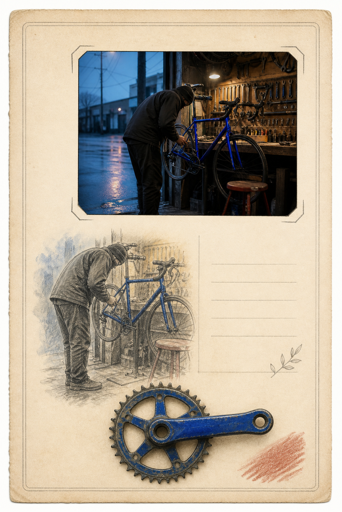

请使用电脑浏览器
当前产品探索只针对电脑网页，最小宽度为 1180px。
Target Studio · Revision 6
目标驱动的 Skill 能力编排器
目标
→
能力组合
→
SOURCE → RESULT
→
产品输出
13 Skill + 本地扩展能力池
当前目标
周年记忆档案
把现场证据、记忆重绘和可收藏产品结合成一个完整系统。
3
个研究 Skill 参与
目标决定组合
Skill 是后台能力来源；组合和扩展没有固定上限。
SOURCE
原图证据
始终完整显示，用它检验组合结果是否仍来自同一张图。
→
COMPOSED RESULT
完整结果

研究 Skill 能力组合形成的完整样例结果
正在按目标运行能力组合
准备能力路线